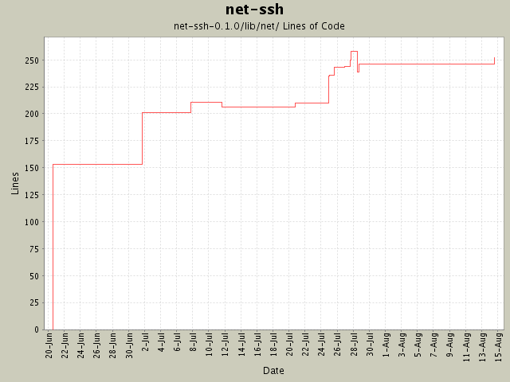

Summary Period: 2004-06-20 to 2004-08-14
[root]/net-ssh-0.1.0/lib/net
 ssh
(3 files, 289 lines)
ssh
(3 files, 289 lines)
 proxy
(4 files, 416 lines)
proxy
(4 files, 416 lines)
 service
(9 files, 2342 lines)
service
(9 files, 2342 lines)
 sftp
(5 files, 1475 lines)
sftp
(5 files, 1475 lines)
 transport
(7 files, 1195 lines)
transport
(7 files, 1195 lines)
 kex
(2 files, 304 lines)
kex
(2 files, 304 lines)
 util
(1 files, 313 lines)
util
(1 files, 313 lines)

Total Lines Of Code:
252 (2005-01-07 15:12)
| Author | Changes | Lines of Code | Lines per Change |
|---|---|---|---|
| minam | 16 (100.0%) | 340 (100.0%) | 21.2 |
Support for hostbased authenticaton.
7 lines of code changed in:
Gabriele Renzi's suggestion of an open-uri interface for SFTP. This
required some new methods be added to the SFTP interfaces (attributes,
and size). Also modified the SFTP 'get' interfaces to support the specification
of a 'chunk size' and a progress callback.
3 lines of code changed in:
Added Daniel Hobe's suggestion of user-specified authentication methods. Also
bumped the version to 0.0.5.
10 lines of code changed in:
The UserKeyManager now encapsulates access to a user's private keys. Private
keys are now loaded "on-demand", instead of up-front; this should prevent
being prompted for passphrases for keys that will never actually be used.
1 lines of code changed in:
Added better logging as a TODO. Added Daniel's suggestion for a 'host'
property on the SSH session. Also added a 'port' property.
8 lines of code changed in:
Added ssh-agent support, and added a #version property to both Net::SSH
and Net::SSH::Transport::Session.
6 lines of code changed in:
Daniel Hobe's suggestion that the options argument to add_options be dup'd
so that deleting the :keys option doesn't have any side effects.
1 lines of code changed in:
Made "session" the default type for new channels.
1 lines of code changed in:
Thanks again to Daniel Hobe for potentially fixing the problem with name/value
pairs in the private key headers. The load_private_key method should work fine
now for all valid keys. It will even prompt for passphrases! (Thanks, Daniel!)
17 lines of code changed in:
First pass at creating SSH-specific exception classes, as recommended by
Daniel Hobe.
9 lines of code changed in:
Variation on Daniel Hobe's suggestion for named parameters to the Net::SSH.start
method. This allows both positional and named parameters.
29 lines of code changed in:
Added rescue clause when loading keys so that the program doesn't die if
it can't load a key.
6 lines of code changed in:
Clients may now specify their preferred algorithms.
23 lines of code changed in:
Initial implementation of port forwarding (local-to-remote). remote-to-local
remains to be done.
18 lines of code changed in:
Began the tedious task of commenting the code. Also (finally) support the
ssh-dss server key type, although this depends on changes to Ruby's OpenSSL
module that have (at the time of this commit) not yet been formally accepted.
48 lines of code changed in:
Initial revision
153 lines of code changed in:
Generated by StatCVS 0.2.3